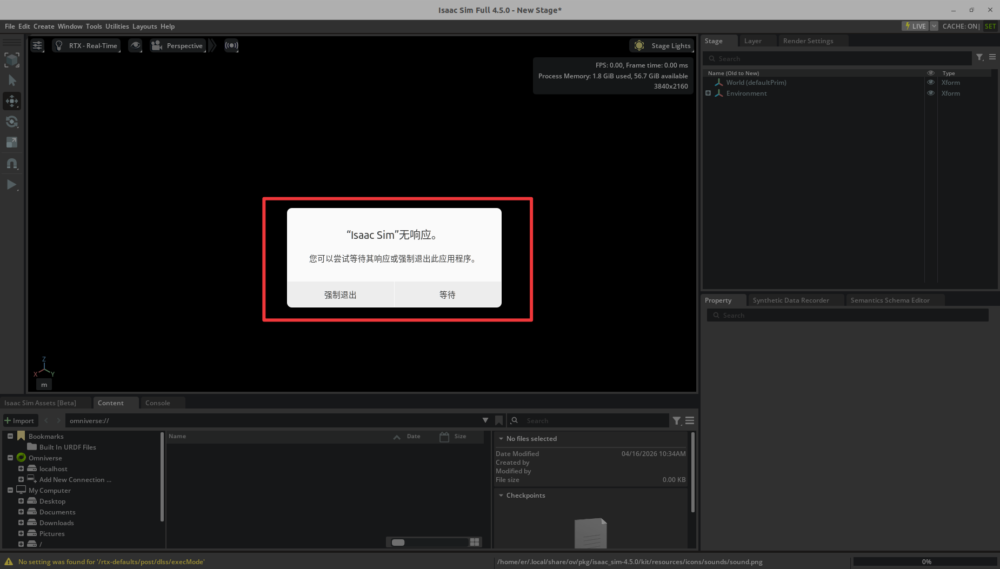
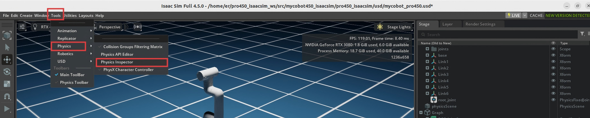
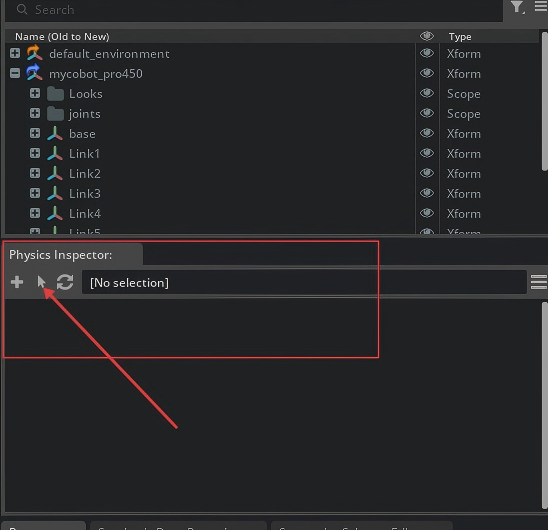
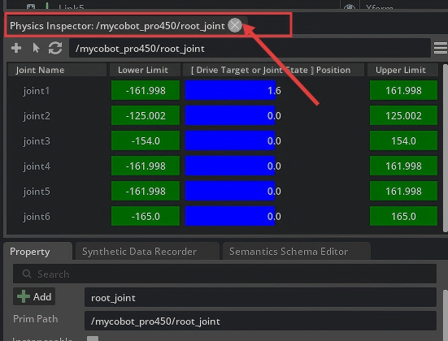
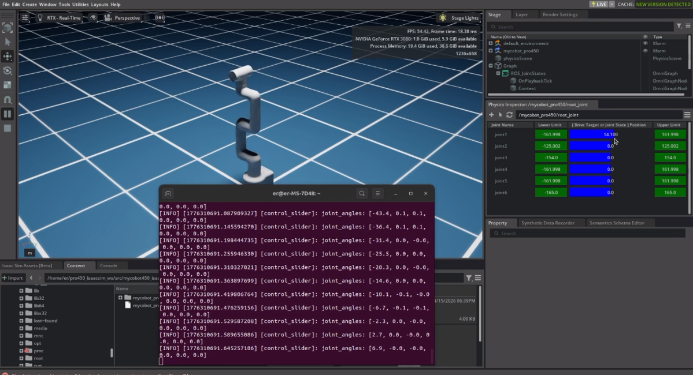
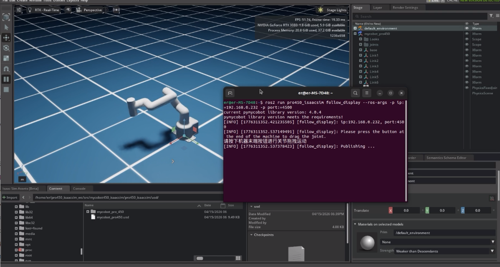
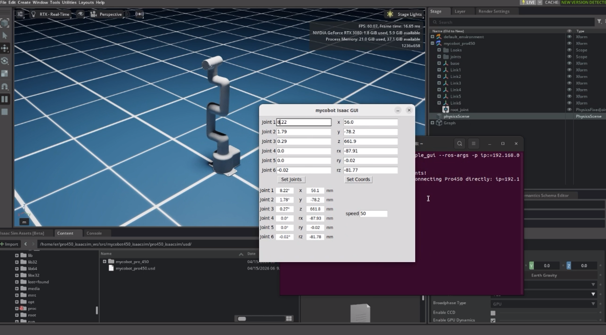

myCobot Pro 450 Isaac Sim
Isaac Sim 是 NVIDIA 提供的机器人仿真平台，用于构建高保真物理环境与机器人模型。
mycobot450_isaacsim 是一个面向 myCobot Pro 450 的仿真与真实机器人协同控制仓库，基于：
- NVIDIA Isaac Sim（仿真）
- ROS 2 Humble（通信中间件）
- MoveIt 2（运动规划）
本项目旨在打通 “仿真 → ROS2 → 真机” 的完整链路，实现：
- 仿真环境中的关节控制与状态同步
- Isaac Sim 与真实 Pro450 的联动控制
- 多种交互方式（滑块 / GUI / 键盘 / MoveIt 2）
- 从基础控制到运动规划的一体化流程
1 项目定位
本仓库不是单一功能包，而是一个系统级集成示例，适用于：
- 机器人仿真验证（Isaac Sim）
- ROS2 控制链路开发
- MoveIt 2 规划与执行测试
- 虚实同步（Sim-to-Real）
2 技术栈说明
- Isaac Sim：用于物理仿真与渲染
- ROS 2：负责消息通信（JointState / 控制指令）
- MoveIt 2：用于路径规划与执行
3 快速开始
如果你第一次使用本仓库，建议按下面顺序操作：
- 安装 ROS2 Humble、Isaac Sim 4.5.0 版本
- 创建 ROS 2 工作空间并克隆本仓库
colcon build编译所有功能包- 启动 Isaac Sim 4.5.0
- 打开仓库中的 USD 场景
- 在 Isaac Sim 中点击
Play - 根据需要启动基础控制节点或 MoveIt 2
最短路径示例：
mkdir -p ~/pro450_isaacsim_ws/src
cd ~/pro450_isaacsim_ws/src
git clone https://github.com/elephantrobotics/mycobot450_isaacsim.git
cd ~/pro450_isaacsim_ws
source /opt/ros/humble/setup.bash
colcon build
source install/setup.bash
4 使用前准备
在使用案例功能之前，请先确认以下硬件和环境准备齐全：
硬件设备
- MyCobot Pro 450 机械臂
- 网线（用于连接机械臂与电脑）
- 电源适配器
- 急停开关（确保安全操作）
软件与环境
- 系统：
Ubuntu 22.04 - GPU：建议 NVIDIA 独显（本项目验证环境为
RTX 3080，显存为10GB） - 已安装
Python 3.10及以上版本 - 已安装
ROS2 Humble版本 - 已安装
NVIDIA Isaac Sim 4.5.0及以上版本，参考： Isaac Sim下载与安装 - 已安装
pymycobot库（版本需大于4.0.1，通过pip install pymycobot终端命令安装） - 确保 MyCobot Pro 450 已正确接通电源，并处于待机状态
- 注意：Pro 450 服务端会在设备上电后自动启动，无需手动操作
- 系统：
网络配置
- MyCobot Pro 450 默认 IP 地址：
192.168.0.232 - 默认端口号：
4500 注意主机 端需要将本机网卡 IP 设置为 同一网段（例如
192.168.0.xxx，xxx为 2~254 之间的任意数，且不能与机械臂冲突）。示例：
- 机械臂 IP：
192.168.0.232 - 主机 IP：
192.168.0.100 - 子网掩码：
255.255.255.0 - DNS服务器：
114.114.114.114
- 机械臂 IP：
验证：完成网络配置后，可在 主机 终端执行以下命令，若能成功返回数据包，则说明网络连接正常：
ping 192.168.0.232
- MyCobot Pro 450 默认 IP 地址：
5 代码安装与编译
本仓库不是一个单独可直接运行的二进制项目，而是一个 ROS 2 工作空间源码仓库。
因此，仓库克隆下来后，需要先放入工作空间并编译，之后才能通过 ros2 run / ros2 launch 使用。
推荐目录结构：
~/pro450_isaacsim_ws/
├── src/
│ └── mycobot450_isaacsim/
├── build/
├── install/
└── log/
创建与编译步骤：
打开一个控制台终端(快捷键Ctrl+Alt+T)，在终端窗口依次输入以下命令：
mkdir -p ~/pro450_isaacsim_ws/src
cd ~/pro450_isaacsim_ws/src
git clone https://github.com/elephantrobotics/mycobot450_isaacsim.git
cd ~/pro450_isaacsim_ws
source /opt/ros/humble/setup.bash
colcon build
source install/setup.bash
如果只想编译某个包，例如：
cd ~/pro450_isaacsim_ws
source /opt/ros/humble/setup.bash
colcon build --packages-select pro450_isaacsim
colcon build --packages-select pro450_isaac_moveit2 pro450_isaac_moveit2_control
source install/setup.bash
6 功能包说明
这里对 mycobot450_isaacsim 仓库中的各项功能包进行简要说明。
mycobot_description
Pro450 的 ROS 2 描述包，提供：
- URDF 模型
- 相关 mesh 资源
- 供
robot_state_publisher、MoveIt 2、Isaac Sim 导入使用的机器人描述
关键文件：
mycobot_description/urdf/mycobot_pro_450/mycobot_pro_450.urdf
pro450_isaacsim
Isaac Sim 基础功能包，提供：
- 关节滑块联动：
slider_control.py - 跟随显示：
follow_display.py - GUI 控制：
simple_gui.py - 键盘控制：
teleop_keyboard.py、teleop_keyboard.launch.py
当前入口脚本：
ros2 run pro450_isaacsim slider_controlros2 run pro450_isaacsim follow_displayros2 run pro450_isaacsim simple_guiros2 run pro450_isaacsim teleop_keyboardros2 launch pro450_isaacsim teleop_keyboard.launch.py
pro450_isaac_moveit2
MoveIt 2 配置包，提供：
- SRDF / kinematics / joint limits / controllers 配置
move_grouprobot_state_publisher- RViz 启动
- Isaac Sim 专用 MoveIt 启动入口：
isaac_moveit.launch.py
pro450_isaac_moveit2_control
MoveIt 2 执行桥接包，提供：
isaac_sync_plan.py
功能是把 MoveIt 的 FollowJointTrajectory 执行请求转成 Isaac Sim 可接受的：
/joint_commandsensor_msgs/msg/JointState
并可选同步下发到真实 Pro450 机械臂。
7 Isaac Sim 启动与加载USD场景
Isaac Sim 安装路径
当前项目的 Isaac Sim 安装路径示例为：
/home/er/.local/share/ov/pkg/isaac_sim-4.5.0
具体安装路径以实际为准。
启动 Isaac Sim
具体安装目录以实际为准。
进入安装目录后，通过官方启动脚本启动：
cd /home/er/.local/share/ov/pkg/isaac_sim-4.5.0
./isaac-sim.sh
注意： Isaac Sim 启动时间比较耗时（大约3分钟），后台需要渲染引擎、初始化核心模块，只需耐心等待即可。如果出现下面弹窗提示：

千万不要 强制退出，继续 等待 即可。 Isaac Sim 加载完成之后，会显示GPU等信息，如下图：

终端日志输出：
Isaac Sim Full App is loaded
如果你的系统已经在 shell 中正确配置了 ROS 2 环境，也可以在启动 Isaac Sim 前先执行：
source /opt/ros/humble/setup.bash
打开 USD 文件场景
本项目推荐直接打开仓库中的 USD 文件：
pro450_isaacsim/pro450_isaacsim/usd/mycobot_pro_450.usd
如果仓库位于：
~/pro450_isaacsim_ws/src/mycobot450_isaacsim
则完整路径通常类似：
~/pro450_isaacsim_ws/src/mycobot450_isaacsim/pro450_isaacsim/pro450_isaacsim/usd/mycobot_pro_450.usd
在 Isaac Sim 中打开方式：
- 启动
./isaac-sim.sh - 选择
File -> Open - 打开上面的
mycobot_pro_450.usd - 等待场景加载完成
- 点击
Play
演示操作：
8 Isaac Sim 配置说明
导入模型
本仓库有两种使用方式：
- 使用
mycobot_description中的 URDF 重新导入 Isaac Sim，生成自己的 USD（需要配置各关节的最大力矩值、阻尼系数、刚度系数：Max Force、Damping、Stiffness） - 直接打开仓库中已经整理好的 USD：
pro450_isaacsim/pro450_isaacsim/usd/mycobot_pro_450.usd
如果你只是想快速验证 ROS 2 / MoveIt 2 / 真机联动，建议优先直接打开现成 USD。
Action Graph 推荐配置
建议至少包含以下节点：
ROS2 ContextOn Playback TickIsaac Read Simulation TimeROS2 Publish Joint StateROS2 Subscribe Joint StateArticulation Controller- 可选：
ROS2 Publish Clock
推荐话题配置：
- 发布仿真关节状态：
/joint_states - 接收关节控制指令：
/joint_command - 可选发布时钟：
/clock
关键 Prim Path 说明
这是本项目最容易踩坑的地方。
ROS2 Publish Joint State
通常应指向可以正确读取关节状态的 prim，例如：
/mycobot_pro450/base
Articulation Controller
通常应指向 articulation root 所在 prim，而不是某个子 link，例如：
/mycobot_pro450/base
如果填错，常见报错为：
Pattern '/mycobot_pro450' did not match any rigid bodiesProvided pattern list did not match any articulationsNoneType object has no attribute link_names
Physics Inspector 打开和注意事项
加载USD场景文件之后，选择
Tools -> Physics -> Physics Inspector
在插件窗口中，点击
鼠标箭头符号
在弹窗中，选择
Articulation
Physics Inspector 插件加载完成后，可以拖动关节进行仿真模型运动：

关闭 Physics Inspector插件：

Physics Inspector 可以用于手动拖动关节，但它和 Articulation Controller 都会写同一套 articulation。
因此：
- 只发布
joint_states时，一般可以开 Inspector 手动拖动 - 使用
Subscribe + Articulation Controller通过 ROS 控制时，建议关闭 Inspector
否则可能出现：
Simulation view object is invalidated and cannot be used againArticulation Controller异常- 仿真控制冲突
9 基础功能使用
注意： 所有的功能案例使用都基于在Isaac Sim中已打开现有的USD场景。，USD文件路径：
mycobot450_isaacsim/pro450_isaacsim/pro450_isaacsim/usd/mycobot_pro_450.usd
1. 滑块跟随控制
加载USD场景文件之后， 打开
Physics Inspector插件工具在 Isaac Sim 中点击
Play用于把 Isaac / ROS 关节状态同步到真机。打开控制台终端运行命令：
ros2 run pro450_isaacsim slider_control --ros-args -p ip:=192.168.0.232 -p port:=4500

运行成功之后，通过拖动 Inspector 中的关节控制仿真模型运动，真实机器也会跟随运动。
请注意：由于在命令输入的同时机械臂会移动到Isaac模型目前的位置，在您使用命令之前请确保 Isaac 中的模型没有出现穿模现象
不要在连接机械臂后做出快速拖动滑块的行为，防止机械臂损坏
说明：
- 该节点订阅关节状态并调用
send_angles - 适合做简单的关节拖动控制
2. 模型跟随显示
除了上面的控制，我们也可以让模型跟随真实的机械臂运动。
加载USD场景文件之后（需要关闭
Physics Inspector插件工具）在 Isaac Sim 中点击
Play把真机关节角度状态发布到 Isaac。打开控制台终端运行命令：
ros2 run pro450_isaacsim follow_display --ros-args -p ip:=192.168.0.232 -p port:=4500

运行成功后，根据终端输出信息，需要同时按住机器末端按钮拖拽关节移动，Isaac仿真模型将会跟随真实机械臂运动。
3. GUI 控制
在前者的基础上，这里还提供了一个简单的图形用户界面控制接口。
加载USD场景文件之后（需要关闭
Physics Inspector插件工具）在 Isaac Sim 中点击
Play把真机关节角度状态发布到 Isaac。打开控制台终端运行命令：
ros2 run pro450_isaacsim simple_gui --ros-args -p ip:=192.168.0.232 -p port:=4500
运行成功之后，然后在GUI界面输入相关角度和坐标信息，点击对应按钮，即可实现真实机器与仿真模型的同步运动

说明：
- 角度控制会直接向 Isaac 发布目标关节角
- 坐标控制会先发真机，再通过真机角度反馈同步到 Isaac
- 当前实现已补充“短轮询 + GUI 刷新补发”机制，以改进坐标控制同步
4. 键盘控制
在 pro450_isaacsim 包中添加了键盘控制功能，并在 IsaacSim 中实时同步。 该功能依赖于 Python Api，因此请确保与真正的机械臂连接。
加载USD场景文件之后（需要关闭
Physics Inspector插件工具）在 Isaac Sim 中点击
Play把真机关节角度状态发布到 Isaac。打开控制台终端运行命令：
ros2 launch pro450_isaacsim teleop_keyboard.launch.py ip:=192.168.0.232 port:=4500
运行成功后，会自动新开一个控制台终端，并输出类似信息：
Mycobot Teleop Keyboard Controller
---------------------------
Movimg options(control coordinations [x,y,z,rx,ry,rz]):
w(x+)
a(y-) s(x-) d(y+)
z(z-) x(z+)
u(rx+) i(ry+) o(rz+)
j(rx-) k(ry-) l(rz-)
+/- : Increase/decrease movement step size
Other:
1 - Go to init pose
2 - Go to home pose
3 - Resave home pose
q - Quit
在该终端中，您可以通过命令行中的按键控制机械臂的状态并移动机械臂。
注意：先输入2机械臂回到起始点之后，再进行其他坐标控制操作，终端会有如下类似提示：
[WARN] [1758001794.385321]: Coordinate control disabled. Please press '2' first.
[INFO] [1758001804.552778]: Home pose reached. Coordinate control enabled.
[INFO] [1758001817.069637]: Home pose reached. Coordinate control enabled.
[WARN] [1758001836.301070]: Returned to zero. Press '2' to enable coordinate control.
[WARN] [1758001848.830702]: Coordinate control disabled. Please press '2' first.
[INFO] [1758001863.383565]: Home pose reached. Coordinate control enabled.
[WARN] [1758001933.596504]: Returned to zero. Press '2' to enable coordinate control.
[WARN] [1758001942.051899]: Coordinate control disabled. Please press '2' first.
说明：
- 键盘节点会直接连接 Pro450
send_angles控制会直接同步 Isaacsend_coords控制依赖真机反馈角度同步 Isaac- Launch 中通过
x-terminal-emulator -e启动，避免termios的 TTY 报错
10 MoveIt 2 与 Isaac Sim 联动
启动程序
加载USD场景文件之后（需要关闭
Physics Inspector插件工具）点击 在 Isaac Sim 中点击
Play加载
moveit rviz页面。打开控制台终端运行命令：
ros2 launch pro450_isaac_moveit2 isaac_moveit.launch.py

此时在moveit页面中进行路径规划，Isaac里面的模型也会跟随规划运动。
如果需要规划执行时同步控制真机，新打开一个控制台终端运行命令：
ros2 run pro450_isaac_moveit2_control isaac_sync_plan --ros-args -p ip:=192.168.0.232 -p port:=4500
运行成功后，在moveit 页面中执行规划时，Isaac仿真模型、真实机械臂将会同步运动。

说明
isaac_moveit.launch.py 会启动：
rsp.launch.pystatic_virtual_joint_tfs.launch.pymove_group.launch.pymoveit_rviz.launch.py
isaac_sync_plan.py 会执行桥接节点，把：
/arm_group_controller/follow_joint_trajectory
转换成：
/joint_command
并按需要同步到真机。
11 推荐使用流程
场景一：只做 Isaac 仿真 + ROS 2 基础联动
- Isaac Sim 中导入 Pro450 模型并完成 Action Graph 配置
- 点击
Play - 验证
/joint_states正常发布 - 用
ros2 topic pub或自己的 ROS 2 节点向/joint_command发JointState
场景二：真机 + Isaac 基础联动
- Isaac Sim 中配置
/joint_command - 启动
teleop_keyboard或simple_gui - 真机执行命令
- 通过
/joint_command镜像到 Isaac
场景三：MoveIt 2 + Isaac + 真机
- Isaac Sim 点击
Play - 启动
isaac_moveit.launch.py - 在 RViz 中规划
- 点击
Execute isaac_sync_plan.py将轨迹转成/joint_command- Isaac 执行，必要时同步真机
12 常见问题
1. /joint_command 没有数据
正常。ROS2 Subscribe Joint State 是订阅者，不会自己发布数据。
需要有外部节点主动向 /joint_command 发布消息。
2. 仿真模型不动，但 /joint_states 正常
重点检查：
Articulation Controller的targetPrim是否指向 articulation root/joint_command是否真的有发布者Physics Inspector是否同时开着并与控制器冲突
3. MoveIt 规划能成功，但 Execute 不驱动 Isaac
重点检查：
- 是否使用了
isaac_moveit.launch.py - 执行桥接节点
isaac_sync_plan.py是否启动 - Isaac 是否仍在
Play /joint_command是否能收到桥接后的JointState
4. 键盘节点报错 termios.error: (25, 'Inappropriate ioctl for device')
原因：
- 节点没有绑定真实交互式终端
处理：
- 使用仓库中的
teleop_keyboard.launch.py - 或单独在终端中
ros2 run pro450_isaacsim teleop_keyboard
5. 真机与 Isaac 同步有延迟
原因通常包括：
send_coords本身没有直接关节角目标- 同步逻辑依赖真机角度反馈
- 真机和 Isaac 的控制链路不同步
当前仓库已针对 GUI 的坐标控制增加：
- 短轮询真机角度
- GUI 刷新中的补发同步
但如果要做到更严格的“过程同步”，仍建议进一步引入：
- 更高频角度采样
- 轨迹插补
- IK 解算后直接驱动 Isaac
13 备注
- 建议所有涉及 Isaac 控制的节点统一使用：
/joint_states/joint_command- 可选
/clock
- 如果你的系统里存在多个工作空间都安装了同名包，注意
source install/setup.bash的顺序，避免get_package_share_directory()解析到错误的 underlay。